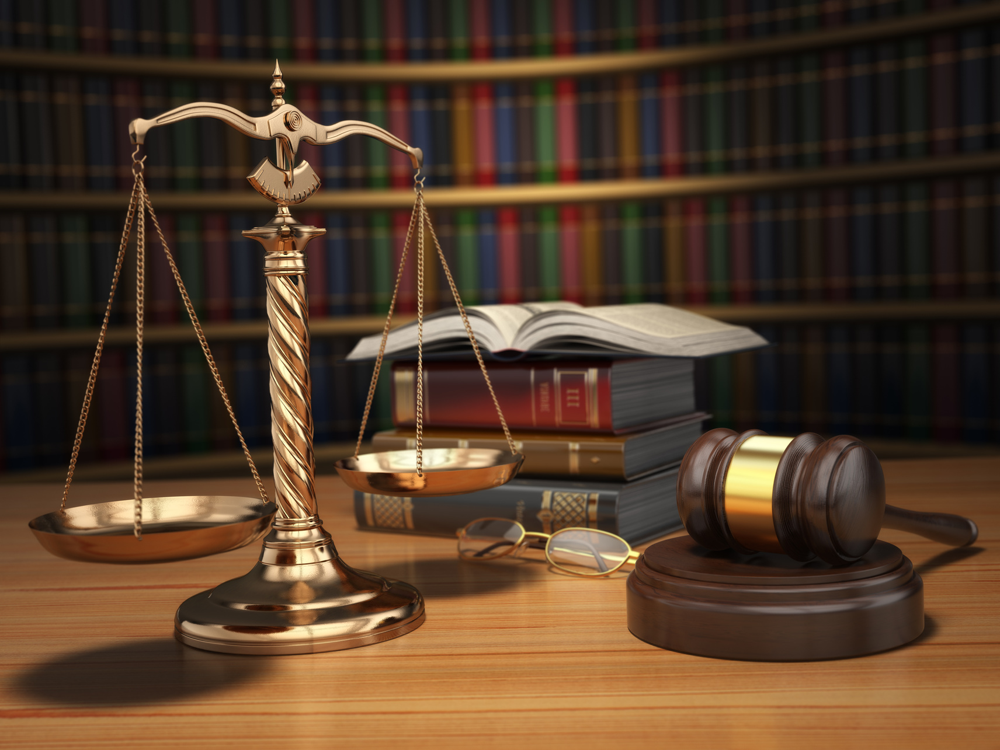

Если у вас есть опасения, что в будущем вам будет затруднительно или невозможно предоставить доказательства, которые вам могут понадобиться, например, в суде, или другом административном органе, вы можете обратиться за помощью к нотариусу. По вашей просьбе он сохранит и зафиксирует данные доказательства. Данная процедура называется — обеспечение доказательств.
В различных жизненных ситуациях вам может понадобиться обеспечить доказательства. Всем известны такие жизненные ситуации, как залив квартиры по вине соседей, дорожно-транспортное происшествие, воровство информации и авторских продуктов с Интернет страниц. Также основанием для обеспечения доказательств может служить вероятность отсутствия важного свидетеля на будущем судебном процессе.
Порядок обеспечения доказательств
Нотариус может обеспечивать доказательства в порядке, который предусмотрен законом. Обеспечение доказательств нотариусом возможно как до начала, так и во время судебного процесса. Чтобы обеспечение доказательств было возможным заявителю, на имя нотариуса необходимо написать заявление об обеспечении доказательств. И только лишь на основании заявления нотариус может осуществлять сбор доказательств. Заявление может быть написано как в произвольной форме, так и по установленному образцу, главное чтобы были указаны причины, из-за которых необходимо обеспечение доказательств нотариусом. Например, свидетель может уехать в длительную командировку, сайт может быть удалён, в кухне, которую затопили соседи будет произведен ремонт.
В заявлении также должен быть указан предмет доказывания и права заявителя, которые он хочет защищать в суде.
После принятия нотариусом заявления об обеспечении доказательств, нотариус обязан известить все заинтересованные в этом деле стороны, о том, где и когда будет производиться обеспечение доказательств.
В порядке обеспечения доказательств нотариус использует различные средства доказывания: осмотр письменных и/или вещественных доказательств; допрос свидетелей; назначение необходимой экспертизы.
Осмотр письменных и/или вещественных доказательств необходим в том случае, если существует вероятность утраты данных фактов до начала судебного процесса. Документальным подтверждением обеспечения доказательств при осмотре письменных и вещественных доказательств является протокол осмотра.
Допрос свидетелей производится, если данные свидетели не смогут лично участвовать в будущем судебном процессе. В порядке обеспечения доказательств нотариус опрашивает данных лиц и фиксирует их показания в протоколе допроса. Протокол допроса должен быть подписан свидетелем, гражданами, участвующими в допросе свидетеля, и нотариусом.
Если у нотариуса есть основания полагать, что для обеспечения доказательств необходимо заключение специалиста в определенной области, то он выносит постановление о назначении экспертизы.
В случае неявки свидетеля или эксперта по вызову нотариус сообщает об этом в суд по месту жительства свидетеля или эксперта для принятия мер, предусмотренных законодательными актами Российской Федерации.
Нотариус предупреждает свидетелей и экспертов, которые участвуют в процессе обеспечения доказательств, о возможности уголовной ответственности в случае дачи ложных показаний и в случае предоставления ложных заведомо заключений. В порядке обеспечения доказательств, нотариус должен составить протокол допроса (составленный при допросе свидетелей) и протокол осмотра (составленный при проведении осмотра доказательств).
Обеспечение доказательств в гражданском процессе
Если в случае какого-либо происшествия вы опасаетесь, что не сможете обеспечить доказательства или они будут утеряны, вам необходимо обратиться к нотариусу с заявлением об обеспечении доказательств. Тогда нотариус опросит свидетелей, осмотрит вещественные доказательства.
Обеспечение доказательств может понадобиться в различных случаях. Зачастую это касается сведений, которые могут быть потеряны, либо являются весомым аргументом в различных уголовных, административных делах. Например, когда свидетель находится в тяжелом состоянии и т.п.
Обеспечение доказательств в Интернете
В последнее время обеспечение доказательств в Интернете становится все более востребованной услугой. Со стремительным ростом количества сайтов растет и необходимость обеспечения доказательств в Интернете.
Обеспечение доказательств в Интернете может осуществляться для подтверждения нарушения фактов при следующих нарушениях:
- при краже доменов;
- при воровстве авторского контента (текстов, аудио- и видеоматериалов);
- при незаконном использовании товарных знаков;
- при размещении рекламы, противоречащей положениям закона о рекламе;
- при размещении клеветнической информации, которая порочит деловую репутацию, честь и достоинство гражданина или юридического лица.
За обеспечением доказательств в Интернете заявитель обращается к нотариусу с четко сформированной причиной обеспечения доказательств. В заявлении указывается поэтапный доступ к странице сайта. Затем нотариус производит порядок обеспечения доказательств: осмотр необходимого сайта по указанным этапам в заявлении.
При осмотре Интернет страниц нотариус должен убедиться в том, что на указанном сайте размещена информация, нарушающая права и интересы заявителя.
После необходимой проверки и распечатки материалов, являющихся доказательствами, нотариус заверяет Интернет страницы и составляет протокол осмотра сайта, содержащий:
- перечень действий, совершенных нотариусом;
- описание осмотренных страниц;
- состав доказательств;
- место и дату проведения нотариального заверения сайта;
- данные о заинтересованных лицах;
- данные о нотариусе.
К протоколу осмотра сайта прилагаются все необходимые материалы, являющиеся доказательствами факта правонарушения (распечатанные и заверенные Интернет страницы, аудио-, видео — и графические объекты).
Чтобы создать обеспечение доказательств в Интернете от физического лица требуется паспорт, а от юридического лица полный пакет правоустанавливающих документов.